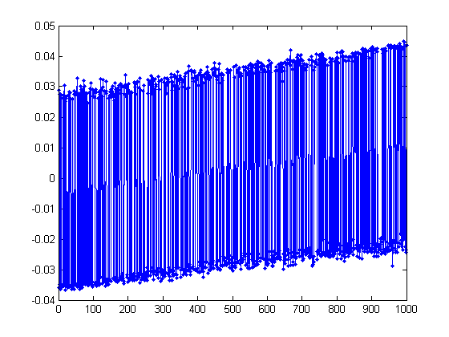
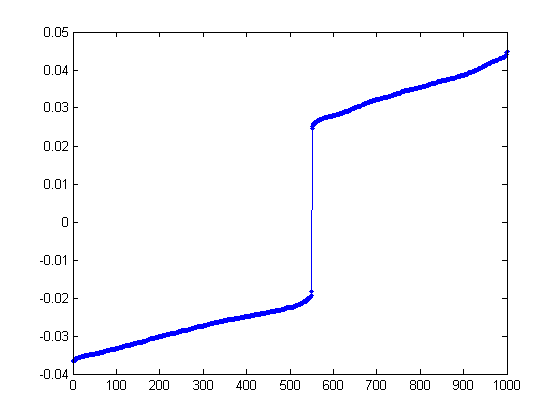
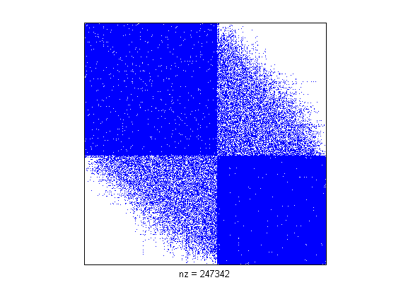
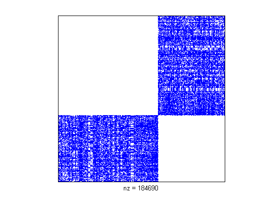
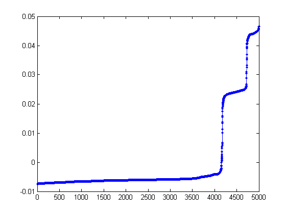
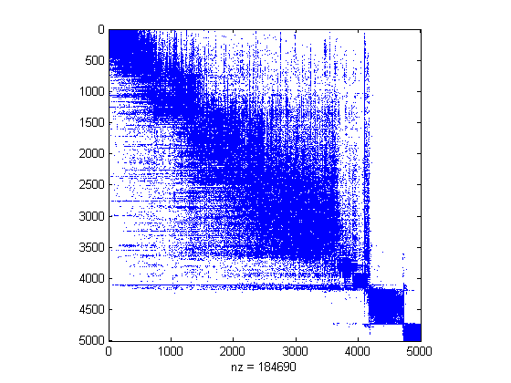
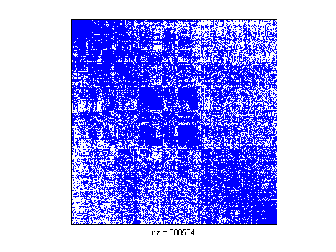
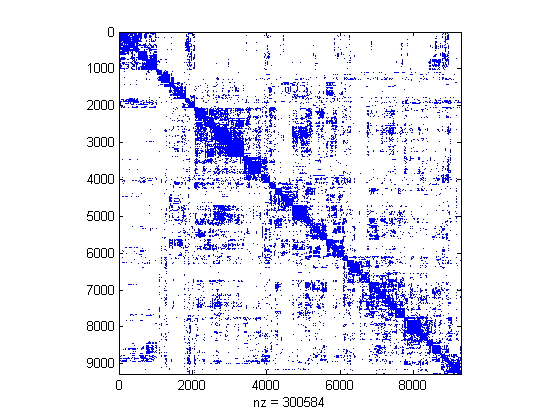
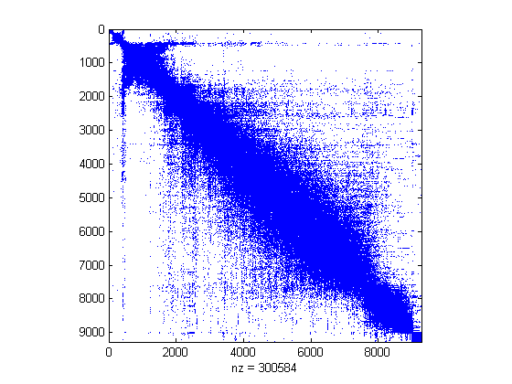
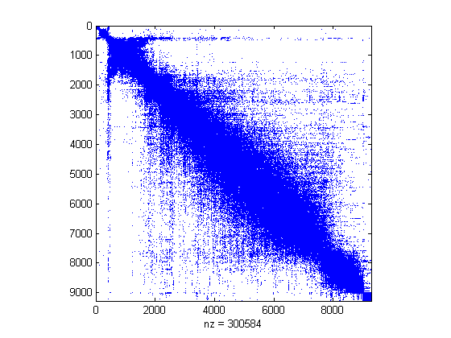

In this segment, we'll plant a partition in a graph, and then use the second smallest eigenvector to find it.
As always, the first step is to generate our dataset. In this example, we'll be a little more ambitious
and use a larger number of vertices.
>> n = 1000;
To plant an artificial partition in our dataset, we need to determine the vectices in each of the groups.
To do this, we randomly generate a permutation of all the vertices and select one set as group 1
and the rest as group 2. The variable gs controls how big the size of the first group.
Now, we need to decide on the probabilities of edges within each group and between the two groups. Because we are
planting a partition, the probabilities of edges between the groups should be much lower than the probability of
edges within each group.
Suppose that group 1 is a little more tightly connected than group 2. (Please insert your own amusing names
for an actual identification of group 1 and group 2, e.g. politicians and mathematicians.)
While some might claim to see a partition in this data, I think it is not particularly obvious.
Now, let's investigate what the second smallest eigenvector tells us about this graph.
>> L = laplacian(A);
>> [V D] = eigs(L, 2, 'SA');
>> D(2,2)
ans =
46.7158
The large second smallest eigenvalue states that we
shouldn't expect to find any very good cuts in our dataset.
To see what we found, let's plot the second smallest eigenvector V(:,2).
>> plot(V(:,2), '.-');

That isn't all that helpful. Maybe sorting the vector...
>> plot(sort(V(:,2)), '.-');

Now, that picture is much more informative! We see a large gap in the middle of the values.
Interestingly enough, the number of points on the right gap is the same as gs, the size of
our planted group. Let's see what happens when we permute the vertices of the graph
to this ordering.
>> [ignore p] = sort(V(:,2));
>> spy(A(p,p));

Looks like we found our partitions!
Meaningful Partitions of Real Datasets
The previous example was rather compelling. However, it was also fake. We
planted a partition there! How do we know such things occur in real data?
In this two section, we'll see what happens when we try the same procedure
on two matrices. Unfortunately, the data for these sets is private,
so it's difficult to "follow along" with the Matlab. Nevertheless,
the pictures should tell the story.
The dataset for this section is a bipartite graph
from Yahoo! Search Marketing (formerly known as Overture).
The two types of nodes are advertisers and keywords. Advertisers
place bids on keywords.
The functions readSMAT and readList are my own functions
for reading in datafiles from disk.
>> A = readSMAT('us.3k.2k.smat');
>> labels = readList('us.3k.2k.trms');
Because the data is bipartite, we need to
form the full adjacency matrix for the graph.
>> [m n] = size(A);
>> B = [sparse(m,m) A; A' sparse(n,n)];
As always, a first good step is to take a look at the matrix.
>> spy(B);

Except for the trivial structure of a bipartite graph, there isn't much else here, so let's
use the second smallest eigenvector of the Laplacian matrix.
>> L = laplacian(B);
>> [V D] = eigs(L, 2, 'SA');
>> D(2,2)
ans =
0.6031
Here, the second smallest eigenvalue is significantly smaller than the first dataset.
This means that we expect to find some fairly small cuts or rather tight clusters.
In the previous test, we found that plotting the sorted eigenvector was most informative.
>> plot(sort(V(:,2)), '.-');

Widely generalizing from our previous results, the two large gaps in the
sorted eigenvector state that we'd expect three large groups in our dataset.
>> [ignore p] = sort(V(:,2));
>> spy(B(p,p));

As expected, we see three large groups. For this graph, we can
validate the identity of each group using the terms associated
with part of the vertices.
Because the graph was bipartite, we need to find the
terms that correspond to the vertices in the "tight" groups
in the lower right. The first 3000 vertices in
the graph correspond to the labels on the terms.
>> plabels = p(p <= 3000);
>> labels(plabels(2500:2525))
ans =
'casino gambling online'
'online roulette'
'craps play'
'sports wagering'
'casino free online'
'play slot'
'betting'
'gambling sports'
'gambling online sports'
'bet bowl super'
'casino net'
'black jack online'
'casino free gambling online'
'game poker'
'betting online sports'
'gambling game'
'black jack play'
'online slot'
'black jack poker roulette'
'betting online shop'
'craps internet'
'book online sport wagering'
'casino free gambling'
'casino game online'
'roulette winning'
'machine poker video'
All the terms relate very strongly to gambling and betting. Thus, the
partition in the data we found corresponds to a gambling cluster of terms.
We can also recursively apply this process (see the next section).
We can browse the same dataset that was ordered using a similiar (but distinct)
procedure at this website:
In this section, we'll see yet another dataset and apply the idea not just once, but recursively
to extract hierarchical structure in the dataset.
The dataset in this section is a similarity score between two musical artists formed
by the ratings of 150,000 users. The data comes from Yahoo!'s LaunchCast service.
>> A = readSMAT('artistuser-md100.sim.smat');
>> labels = readList('artistuser-md100.labels');
>> spy(A);

Without any processing, it's hard to divine any structure in the dataset.
Aha! That's better. It looks like there is a cohesive cluster of
artists in the upper left hand corner of the adjacency matrix.
Let's explore the artists in this area.
>> labels(p(25:50))
ans =
'The Williams Sisters'
'GMWA Women Of Worship'
'Bishop Paul S. Morton, Sr.'
'Tyrone Block'
'The Canton Spirituals'
'1NC (One Nation Crew)'
'Michael Fletcher'
'The McClurkin Project'
'Lawrence Matthews'
'Woody Rock'
'Darwin Hobbs'
'Rev. James Moore'
'Anointed Pace Sisters'
'Colorado Mass Choir'
'Helen Baylor'
'Bishop Clarence E. McClendon'
'Full Gospel Baptist Fellowship Mass Choir'
'The Jackson Southernaires'
'Vanessa Williams [Gospel]'
'Calvin Bernard Rhone'
'Mighty Clouds Of Joy'
'New Direction'
'Deitrick Haddon'
'Rance Allen Group'
'Joann Rosario'
'The Soul Stirrers'
I hope it is pretty obvious that these artists are gospel artists.
While this shows a little bit about the data, it isn't all that much.
Presumably, there is also more structure in the rest of the dataset, besides
just one gospel group of artists.
To expose the remainder of the structure, we apply the second
smallest eigenvector recursively. That is, use the second smallest
eigenvector of the full graph to determine a good way to split the
graph into two pieces (e.g. the gospel cluster and the rest of the data)
and then repeat the process on each subgraph.
If we do this for the entire dataset using
an optimized program written in C, we get the following
adjacency matrix. (The file "au-out.rperm" is the
final permutation produced by the recursive program.)
>> p = load('au-out.rperm')+1;
>> spy(A(p,p))

In the new dataset, related artists should always
be close by. Let's check this hypothesis for
Metallica (mainstream rock), Britney Spears
(teeny bob), and DJ Tiesto (techno).
>> strmatch('Metallica', labels(p))
ans =
5265
>> labels(p(5265-5:5265+5))
ans =
'Nazareth'
'Molly Hatchet'
'April Wine'
'Nine Inch Nails'
'Pantera'
'Metallica'
'Black Sabbath'
'Stone Temple Pilots'
'Ozzy Osbourne'
'Cypress Hill'
'Nirvana'
 
